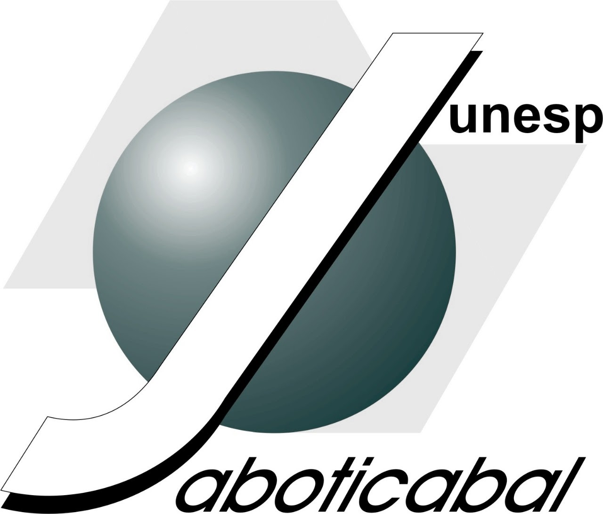

Ponentes y Autores
Presentación de proyectos de investigación en curso o terminados, estudios de caso e iniciativas de emprendimiento ante pares evaluadores nacionales e internacionales.
III Encuentro Internacional de Semilleros de Investigación PREXIA 2022 · «Innovación, Ingeniería y Territorios».
El Tercer Encuentro Internacional de Semilleros marcó el retorno a la presencialidad combinada con transmisión internacional, articulando un primer día de inmersión virtual latinoamericana y un segundo día presencial en la Facultad de Minas.
Sus tres mesas temáticas abordaron la Industria 4.0 y 5.0, la innovación social colaborativa y el diseño de territorios inteligentes y circulares.

Tres roles abiertos para semilleristas de pregrado y posgrado, docentes investigadores, evaluadores y comunidad académica.
Presentación de proyectos de investigación en curso o terminados, estudios de caso e iniciativas de emprendimiento ante pares evaluadores nacionales e internacionales.
Dirección de conferencias magistrales, talleres prácticos y comités científicos en las mesas temáticas para retroalimentar el trabajo de los semilleros.
Participación activa en las sesiones plenarias, paneles interinstitucionales, inmersiones académicas Colombia–Brasil y espacios de networking.
Ejes de investigación y líneas de conocimiento habilitadas para la postulación de ponencias en esta edición.
Explora las subpáginas específicas de agenda, mesas temáticas, conferencistas y modalidades de participación.
Consulta el detalle completo de agenda 2022 correspondiente a esta edición del Encuentro.
Consulta el detalle completo de conferencistas 2022 correspondiente a esta edición del Encuentro.
Consulta el detalle completo de mesas temáticas 2022 correspondiente a esta edición del Encuentro.
Consulta el detalle completo de participa 2022 correspondiente a esta edición del Encuentro.
Afiches, sesiones académicas y registro visual oficial de la edición (4 recursos).


 Universidad Nacional de Colombia
Universidad Nacional de Colombia
 Grupo Geyma · UNAL Medellín
Grupo Geyma · UNAL Medellín
 Semillero PREXIA · UNAL
Semillero PREXIA · UNAL
 Facultad de Ciencias Agrarias · UNAL
Facultad de Ciencias Agrarias · UNAL
 UNESP · São Paulo, Brasil
UNESP · São Paulo, Brasil

UNESP · Campus Jaboticabal Instituto A Nau Ciranda · Brasil
Instituto A Nau Ciranda · Brasil